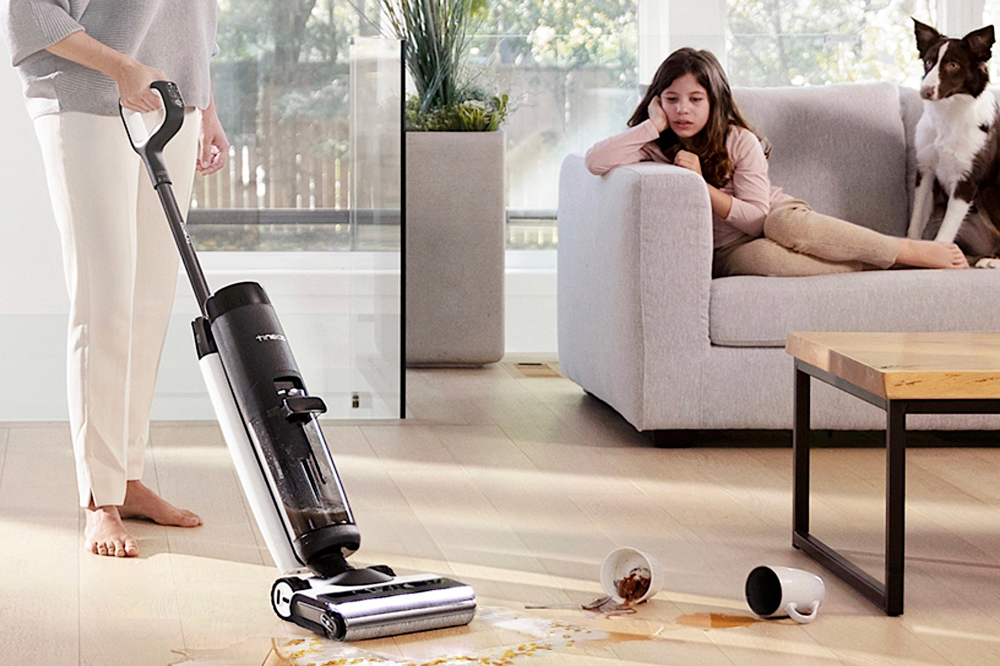

Cet aspirateur laveur fait un énorme carton : Tineco vide le stock à -72%, il devient presque gratuit 😱

🛒 En lien avec cet article
🛒 Voir le prix : aspirateur robot
🛒 Voir le prix : Aspirateur Laveur
Publicité — Liens de partenariat Amazon : une commission peut être reversée, sans surcoût pour vous.
🔥 Top produits tech du moment
🛒 Voir le prix : SSD 1 To Samsung
🛒 Voir le prix : Samsung Galaxy S25
🛒 Voir le prix : iPhone 16 Pro
Publicité — Liens de partenariat Amazon : une commission peut être reversée, sans surcoût pour vous.
L'intelligence artificielle continue de transformer en profondeur notre quotidien et l'économie. Cette annonce s'inscrit dans une dynamique où les grands acteurs accélèrent leurs investissements et leurs lancements.
Ce qu'il faut retenir
Le Tineco Floor One S7 Pro est un aspirateur laveur haut de gamme qui est habituellement commercialisé 699 euros.
Il figure parmi les best-sellers de l'opération Back to School sur AliExpress, et à ce tarif, ce n'est pas vraiment étonnant.
Pourquoi c'est important
Cette information marque une nouvelle étape dans le développement de l'intelligence artificielle. Elle concerne directement les utilisateurs de technologies numériques et mérite d'être suivie de près dans les prochaines semaines. Cet aspirateur laveur fait un énorme carton : Tineco vide le stock à -72%, il devient presque gratuit 😱 est ainsi un signal à prendre en compte pour comprendre les évolutions du secteur.
En résumé
Retenez l'essentiel : Cet aspirateur laveur fait un énorme carton : Tineco vide le stock à -72%, il devient presque gratuit 😱. Cette actualité a été rapportée par 01net. Nous continuerons de suivre ce sujet et de vous tenir informés des prochaines évolutions.
🚀 Vous êtes freelance tech ?
Calculez votre TJM en 30 secondes : micro-entreprise, SASU, EURL ou portage salarial. Gratuit, taux 2025.
Calculer mon TJM →Source : 01net